47 widgets over the game and 68 cards on the dashboard. The list is read from the code, so it cannot go stale.
| Name | Group | Key | Size | Data | |
|---|---|---|---|---|---|
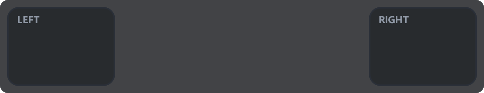 | Blind spot Two wide bars at the screen edges when a car sits alongside. | Solo | blindspot | 620×120 | race |
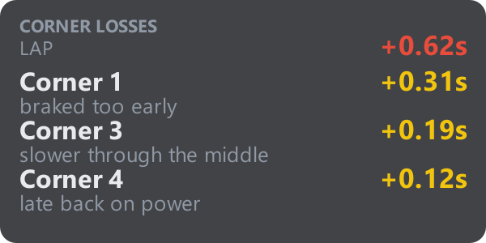 | Corner losses The three corners where the last lap lost the most time. | Solo | cornerloss | 300×150 | corners |
| Delta bar Delta to best as a bar you can read without focusing. | Solo | deltabar | 260×92 | race | |
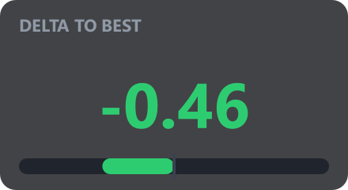 | Delta to best Delta to your best lap, in one large number. | Solo | delta | 220×120 | race |
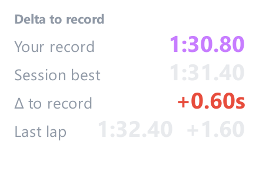 | Delta to record Your track record and how far off it you are today. | Solo | recorddelta | 220×150 | session, race |
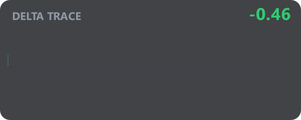 | Delta trace A rolling trace of your delta to the best lap. | Solo | deltatrace | 300×120 | race |
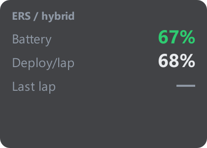 | ERS / hybrid Hybrid charge and how fast you are spending it. | Solo | ers | 210×150 | race |
| Flags Flags as they are shown, plus the ones already waved. | Solo | flags | 240×70 | race | |
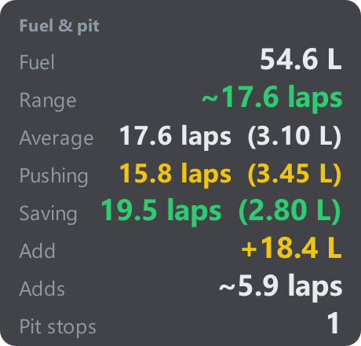 | Fuel & pit Fuel left, burn rate and what the next stop needs. | Solo | fuel | 230×220 | strategy |
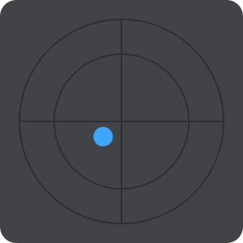 | G-force Lateral and longitudinal load as a moving dot. | Solo | gforce | 150×150 | live |
| H. standings The field as a horizontal strip of driver cards. | Solo | hstandings | 640×70 | standings | |
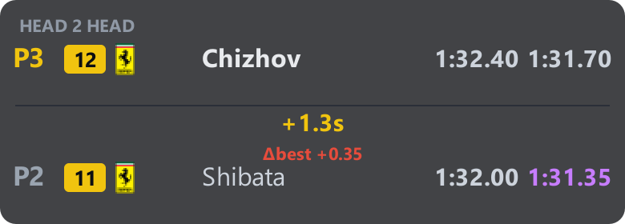 | Head 2 head You against one rival — the gap and the best-lap difference. | Solo | head2head | 390×140 | standings |
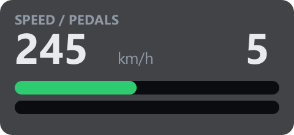 | Inputs Speed, gear and the pedal traces side by side. | Solo | inputs | 240×110 | live |
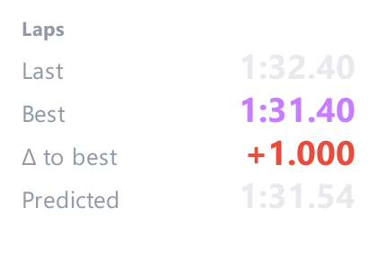 | Laps Last, best and predicted lap — and the gaps between them. | Solo | timing | 210×150 | race |
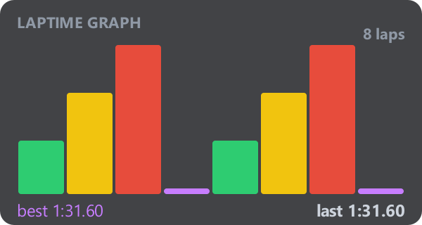 | Laptime graph Every lap as a bar, coloured by pace. | Solo | laptimegraph | 300×160 | race |
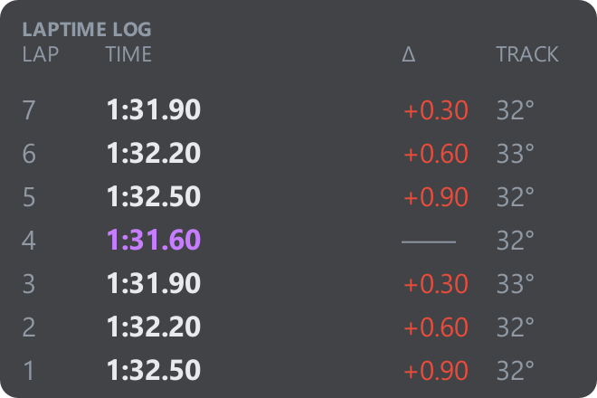 | Laptime log A table of laps: number, time, delta, track temperature. | Solo | laplog | 330×220 | race |
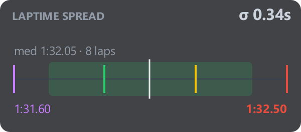 | Laptime spread Where your laps cluster, and which ones are outliers. | Solo | laptimespread | 300×132 | race |
| My car Which car you are in: badge and model name. | Solo | mycar | 240×74 | standings | |
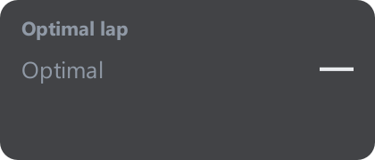 | Optimal lap The lap you could have driven from your best sectors. | Solo | optimal | 210×90 | race |
 | Pit helper Pit lane: limiter, speed and where the box is. | Solo | pithelper | 210×110 | race, live, strategy |
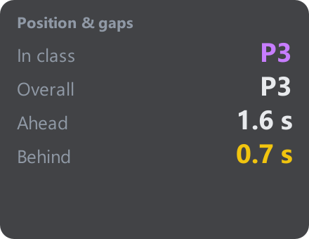 | Position & gaps Position in class, gaps to the car ahead and behind. | Solo | position | 220×170 | race |
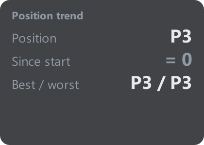 | Position trend How your position moved across the race. | Solo | postrend | 210×150 | race |
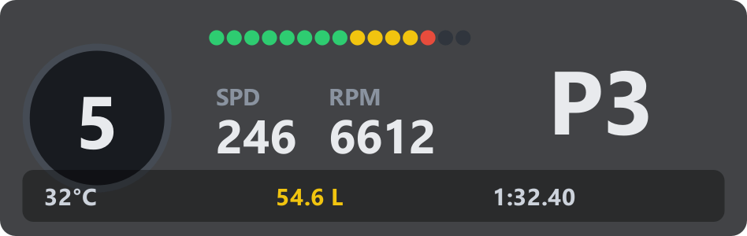 | Race bar A one-line HUD: gear, shift lights, delta and fuel. | Solo | racebar | 474×150 | live, race, strategy |
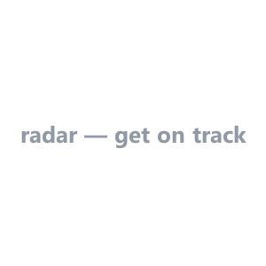 | Radar Cars around you drawn from above, at close range. | Solo | radar | 150×150 | relative, race |
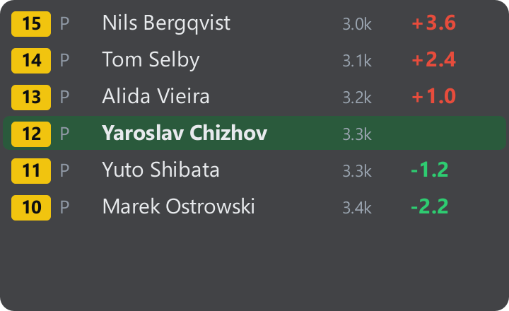 | Relative The cars physically nearest you on track, not on the timesheet. | Solo | relative | 360×220 | relative |
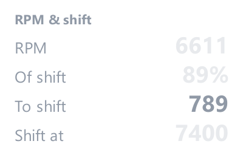 | RPM & shift Revs and the moment to pull the next gear. | Solo | shift | 200×130 | race |
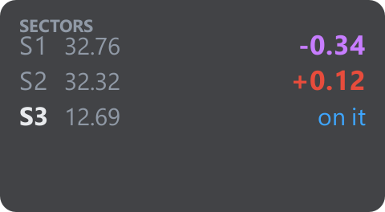 | Sectors Where this lap is up or down, sector by sector. | Solo | sectors | 240×132 | race |
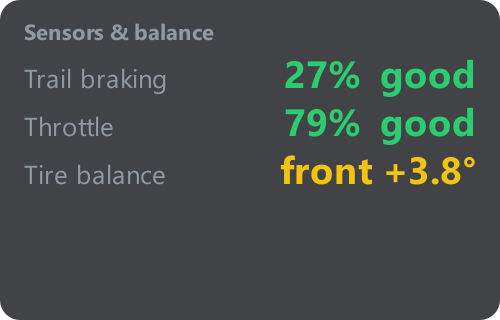 | Sensors & balance How you work the pedals, measured over the stint. | Solo | metrics | 250×160 | result |
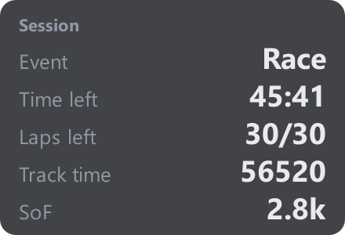 | Session What session this is and how much of it is left. | Solo | session | 220×150 | session |
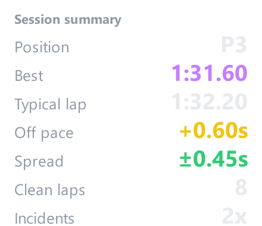 | Session summary The session in one card: position, pace, consistency, incidents. | Solo | summary | 220×190 | race, damage |
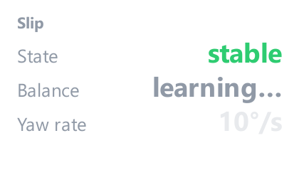 | Slip Not just that the car is sliding — which end is sliding. | Solo | slip | 210×130 | live |
| Spotter Spotter calls in text: car left, car right, three wide. | Solo | spotter | 210×110 | race | |
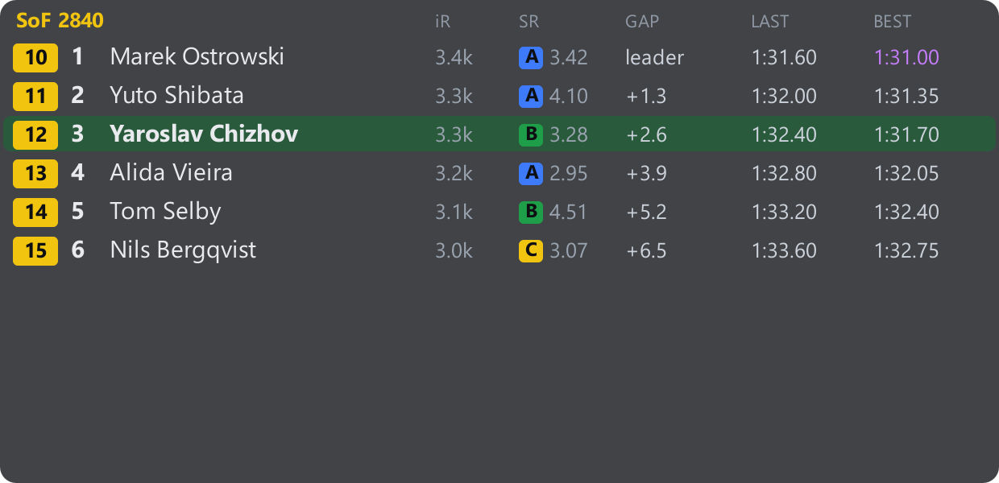 | Standings The full field, sorted the way race control sorts it. | Solo | standings | 620×300 | standings, session, race, live |
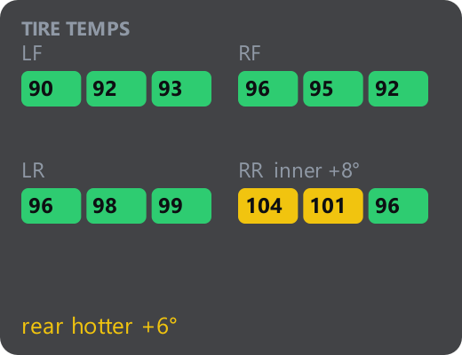 | Tire temps Tyre temperature across three zones of every wheel. | Solo | tiretemps | 260×200 | live |
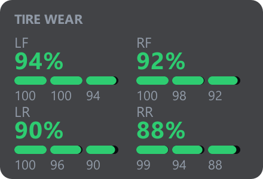 | Tire wear Remaining tread, per wheel and per zone. | Solo | wear | 220×150 | wear |
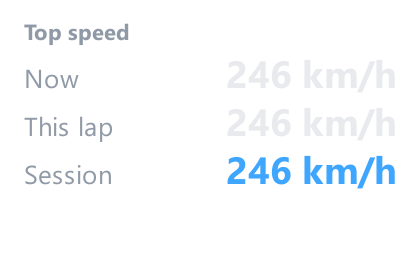 | Top speed Speed now, best this lap and best this session. | Solo | topspeed | 210×130 | live, race |
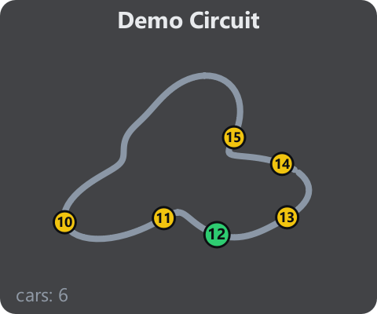 | Track map The circuit drawn from your own laps, with the field on it. | Solo | trackmap | 240×200 | trackmap, relative |
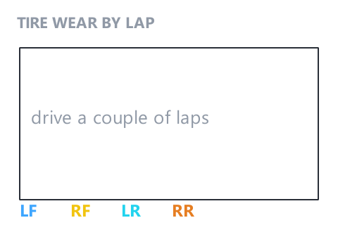 | Wear graph Tyre wear over the stint, as a line per wheel. | Solo | weargraph | 240×160 | wear, race |
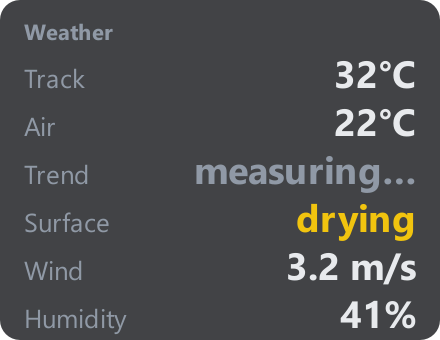 | Weather Air and track temperature, wind, humidity, time of day. | Solo | weather | 220×170 | race, live |
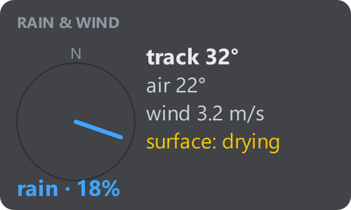 | Weather radar Rain approaching the circuit, and how soon. | Solo | weatherradar | 250×130 | race, live |
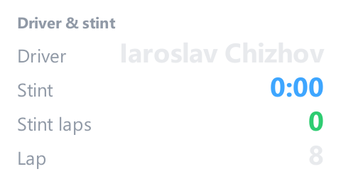 | Driver & stint Who is in the car and how long this stint has run. | Endurance | e_driver | 240×138 | standings, race |
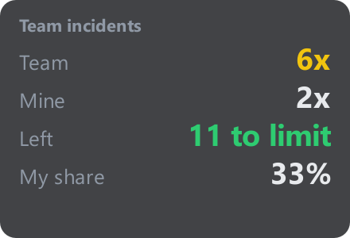 | Team incidents Incident count for the whole team, not just you. | Endurance | e_incidents | 220×150 | damage |
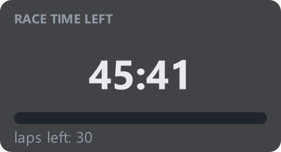 | Time left Time left in the race, big, with a progress bar. | Endurance | e_time | 240×130 | session |
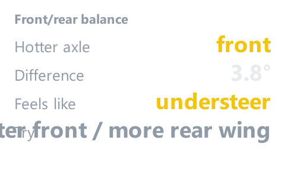 | Front/rear balance Heat balance front to rear — and the setup change it asks for. | Setup | s_balance | 240×150 | result |
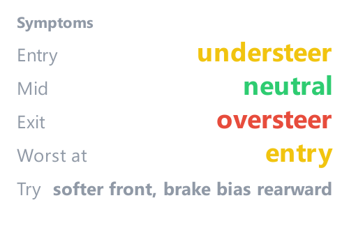 | Symptoms What the car does on entry, mid-corner and exit. | Setup | s_symptoms | 250×180 | result |
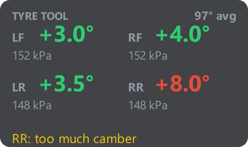 | Tyre tool What the tread edges say about camber and pressure. | Setup | s_tyres | 250×148 | tyres |
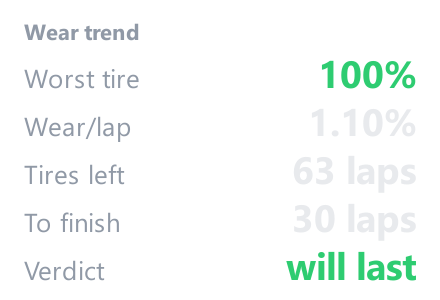 | Wear trend How fast the tyres are going away, and how much is left. | Setup | s_weartrend | 220×150 | strategy |
| Card | Tab | Key |
|---|---|---|
| 🎛️ Gauges | Solo | live |
| ⏱️ Delta to best | Solo | deltabar |
| 🔺 RPM & shift | Solo | shift |
| 🎯 G-force | Solo | gforce |
| 🎡 Steering | Solo | steer |
| 🚀 Top speed | Solo | topspeed |
| Position trend | Solo | postrend |
| 🏁 Position & gaps | Solo | race |
| ⏲️ Laps & sectors | Solo | timing |
| 🏆 Session summary | Solo | summary |
| 🌡️ Tire temps | Solo | tiretemps |
| 📈 Sensors & balance | Solo | metrics |
| 🎓 Training | Solo | training |
| 🌤️ Weather | Solo | weather |
| 📋 Standings | Solo | standings |
| ⚡ ERS / hybrid | Solo | ers |
| 🚩 Flags (history) | Solo | flaglog |
| 🧮 Fuel calculator | Solo | fuelcalc |
| 💎 Optimal lap | Solo | optimal |
| 🟪 Best sectors | Solo | bestsectors |
| 📉 Fuel burn per lap | Solo | fuelgraph |
| 🧭 Relative | Solo | relative |
| 📡 Radar | Solo | radar |
| ⭕ Track ring | Solo | trackring |
| 🗺️ Track map | Solo | trackmap |
| 🛞 Tire wear | Solo | wear |
| ℹ️ Session | Solo | sessioninfo |
| 🏅 Delta to record | Solo | recorddelta |
| 🅿️ Pit helper | Solo | pithelper |
| 👤 Driver & stint | Endurance | e_driver |
| ⏳ Time left | Endurance | e_time |
| ⛽ Fuel & pit | Endurance | e_strategy |
| 🏎️ Car pace | Endurance | e_pace |
| ⚠️ Incidents | Endurance | e_incidents |
| 👥 Team stint plan | Endurance | e_teamplan |
| 📝 Stint plan | Endurance | e_stintplan |
| 🏁 Position & gaps | Endurance | e_pos |
| 🧭 Relative | Endurance | e_relative |
| 📋 Standings | Endurance | e_standings |
| 🛞 Tire wear | Endurance | e_wear |
| 🌡️ Tire temps | Endurance | e_tires |
| 🌤️ Weather | Endurance | e_weather |
| 🗺️ Track map | Endurance | e_trackmap |
| 🛠️ Setup changes | Setup | changes |
| 🌡️ Tire temps | Setup | s_tires |
| 🧭 Setup optimiser | Setup | s_optimiser |
| 🔧 Tyre tool | Setup | s_tyretool |
| 🧩 Symptoms | Setup | s_symptoms |
| ⚖️ Front/rear balance | Setup | s_balance |
| 📋 Full setup sheet | Setup | sheet |
| 📉 Wear trend | Setup | s_weartrend |
| 📝 Setup notes | Setup | s_notes |
| 🏆 Personal bests | Records | records |
| 🥇 Track record | Records | r_track |
| 👥 Rivals' times | Records | r_rivals |
| 📈 Progress | Records | r_progress |
| ⛽ Fuel & pit | Strategy | strategy |
| 📝 Stint plan | Strategy | st_stints |
| 🎯 Pit window | Strategy | st_window |
| 🔀 Undercut / Overcut | Strategy | st_uc |
| 🧹 Broken laps | Race analysis | an_cleanup |
| 🟪 Sectors vs everyone | Race analysis | g61_sectors |
| 🌍 Lap times — everyone | Race analysis | g61_board |
| 🎯 Corner by corner | Race analysis | an_corners |
| ⏱️ Time lost (sectors) | Race analysis | an_sectors |
| 🧠 AI review | Race analysis | driving |
| 🏁 Race result | Race analysis | an_result |
| 🛞 Driving / line | Race analysis | an_driving |